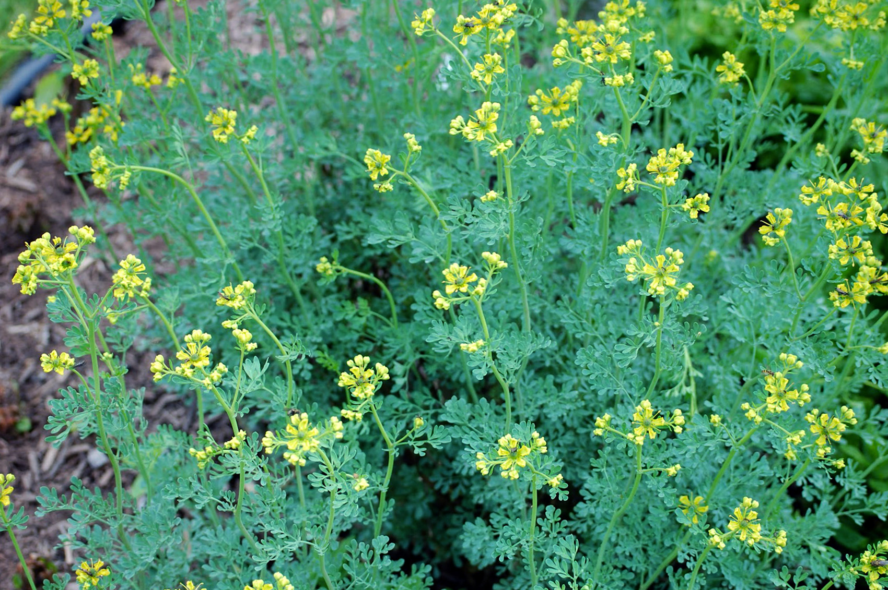

Žalioji rūta

Žalioji rūta (Ruta graveolens) yra daugiametis augalas iš rūtinių (Rutaceae) šeimos. Ji užauga iki 30-60 cm aukščio ir turi status, šakotus stiebus bei žalsvai geltonus žiedus, kurie susitelkę į skėčio formos kekes. Šis augalas yra labai svarbus Lietuvos kultūroje ir tautosakoje. Rūta dažnai minima vestuvių papročiuose, dainose ir liaudies mene. Be to, rūta buvo laikoma vaistažole ir naudota apsaugai nuo blogų dvasių bei ligų.